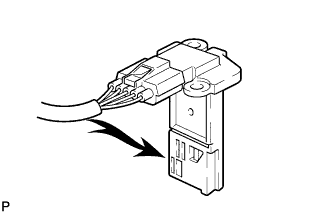

ДАТЧИК МАССОВОГО РАСХОДА ВОЗДУХА > ПРОВЕРКА БЕЗ СНЯТИЯ С АВТОМОБИЛЯ |
| 1. ПРОВЕРЬТЕ ДАТЧИК МАССОВОГО РАСХОДА ВОЗДУХА |
Проверьте датчик массового расхода вохдуха.
Подсоедините портативный диагностический прибор к DLC3.
Установите замок зажигания в положение ON (ВКЛ).
Включите портативный диагностический прибор.
Войдите в следующие меню: Powertrain / Engine / Data List / All Data / MAF.
|  |
Подайте воздух в датчик массового расхода воздуха и убедитесь в том, что величина массового расхода воздуха изменяется.
 | Воздух |